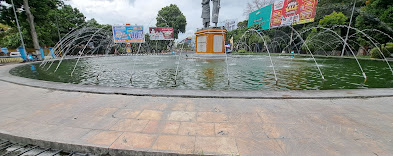

<!DOCTYPE html>
<html>
  <head>
    <title>Kota Mataram</title>
    <meta charset="utf-8" />
    <link rel="stylesheet" type="text/css" href="asset/leaflet/leaflet.css" />
    <script src="asset/leaflet/leaflet.js"></script>
    <script src="json/mataram.js"></script>
    <style>
      html,
      body {
        height: 100%;
        width: 100%;
        margin: 0;
        padding: 0;
      }
      #map {
        width: 100%;
        height: 100%;
      }
      .leaflet-popup-content {
        width: auto !important;
      }
    </style>
  </head>
  <body>
    <div id="map"></div>
    <script>
      //##############################################//
      // Membuat Icon Pada Peta
      //##############################################//
      var mapIcon = L.Icon.extend({
        iconSize: [32, 37],
      });
      var kesehatan = new mapIcon({ iconUrl: "icon/hospital.png" }),
        taman = new mapIcon({ iconUrl: "icon/photo.png" }),
        sekolah = new mapIcon({ iconUrl: "icon/school.png" }),
        polisi = new mapIcon({ iconUrl: "icon/police.png" }),
        camat = new mapIcon({ iconUrl: "icon/office.png" });

      //##############################################//
      // Mendeklarasikan Marker kesehatan dan membuatnya menjadi
      // Layer Group
      //##############################################//

      var rs1 = L.marker([-8.598252442676085, 116.11422157688921], { icon: kesehatan }).bindPopup("Rumah Sakit Umum kota Mataram ");
      var rs2 = L.marker([-8.576302888379706, 116.08380258528662], { icon: kesehatan }).bindPopup("RS Bhayangkara Mataram ");

      var kesehatan = L.layerGroup([rs1, rs2]);

      //##############################################//
      // Mendeklarasikan Marker Taman Bermain dan membuatnya menjadi
      // Layer Group
      //##############################################//
      var tmn1 = L.marker([-8.584886137787832, 116.11733650703268], { icon: taman }).bindPopup("Air Mancur Mataram ");
      var tmn2 = L.marker([-8.568982148933133, 116.0720597122023], { icon: taman }).bindPopup("Pantai Ampenan ");
      var taman = L.layerGroup([tmn1, tmn2]);


      //##############################################//
      // Mendeklarasikan Marker keamanan dan membuatnya menjadi
      // Layer Group
      //##############################################//

      var pol1 = L.marker([-8.59199614800241, 116.11286906889427], { icon: polisi }).bindPopup("Polsek Mataram ");
      var pol2 = L.marker([-8.577431467648145, 116.08298624289134], { icon: polisi }).bindPopup("Polresta Mataram ");

      var polisi = L.layerGroup([pol1,pol2]);

      //##############################################//
      // Mendeklarasikan Marker waduk dan membuatnya menjadi
      // Layer Group
      //##############################################//
      var skl1 = L.marker([-8.60782734116045, 116.12093752318047], { icon: sekolah }).bindPopup("SMAN 4 Mataram ");
      var skl2 = L.marker([-8.582661577138975, 116.08914977779834], { icon: sekolah }).bindPopup("SMAN 3 Mataram ");

      var sekolah = L.layerGroup([skl1, skl2]);

      //##############################################//
      // Mendeklarasikan Marker Kantor camat dan membuatnya menjadi
      // Layer Group
      //##############################################//

      var cmt1 = L.marker([-8.56612612619599, 116.13559877947263], { icon: camat }).bindPopup("Kantor Camat Cakranegara ");
      var cmt2 = L.marker([-8.579365815873325, 116.08263391016231], { icon: camat }).bindPopup("Kantor Camat Ampenan  ");
      var cmt3 = L.marker([-8.593965724022974, 116.11217823714543], { icon: camat }).bindPopup("Kantor Camat Mataram ");
      var cmt4 = L.marker([-8.592905431828399, 116.15164507947317], { icon: camat }).bindPopup("Kantor Camat Sandubaya ");
      var cmt5 = L.marker([-8.611002022486208, 116.07623982761169], { icon: camat }).bindPopup("Kantor Camat Sekarbela ");
      var cmt6 = L.marker([-8.563690197925078, 116.11778353714492], { icon: camat }).bindPopup("Kantor Camat Selaparang ");
       var camat = L.layerGroup([cmt1, cmt2, cmt3, cmt4, cmt5, cmt6]);

      //##############################################//
      // Membuat BaseMap Pada Peta
      //##############################################//

      var mbAttr =
          'Map data &copy; <a href="https://www.openstreetmap.org/">OpenStreetMap</a> contributors, ' + '<a href="https://creativecommons.org/licenses/by-sa/2.0/">CC-BY-SA</a>, ' + 'Imagery © <a href="https://www.mapbox.com/">Mapbox</a>',
        mbUrl = "https://api.tiles.mapbox.com/v4/{id}/{z}/{x}/{y}.png?access_token=pk.eyJ1IjoibWFwYm94IiwiYSI6ImNpejY4NXVycTA2emYycXBndHRqcmZ3N3gifQ.rJcFIG214AriISLbB6B5aw";

      var streets = L.tileLayer(mbUrl, { id: "mapbox.streets", attribution: mbAttr });
      var openstreets = L.tileLayer('https://{s}.tile.openstreetmap.fr/hot/{z}/{x}/{y}.png', {
    maxZoom: 19,
    attribution: '© OpenStreetMap contributors, Tiles style by Humanitarian OpenStreetMap Team hosted by OpenStreetMap France'});
    var satelit = L.tileLayer('https://server.arcgisonline.com/ArcGIS/rest/services/World_Imagery/MapServer/tile/{z}/{y}/{x}', {
    attribution: 'Tiles &copy; Esri &mdash; Source: Esri, i-cubed, USDA, USGS, AEX, GeoEye, Getmapping, Aerogrid, IGN, IGP, UPR-EGP, and the GIS User Community',
});
      //##############################################//
      // Mendeklarasikan Peta kedalam Id Map
      //##############################################//
      var map = L.map("map", {
        center: [-8.596739142473067, 116.10289132254208],
        zoom: 13.4,
        layers: [openstreets],
      });
      L.tileLayer("https://tile.openstreetmap.org/{z}/{x}/{y}.png", {
        maxZoom: 15,
        attribution: '&copy; <a href="http://www.openstreetmap.org/copyright">OpenStreetMap</a>',
      }).addTo(map);
      //##############################################//
      // Mendeklarasikan BaseLayer Pada Map yakni Street
      //##############################################//
      var baseLayers = {
        Streets: streets,
        Satelit : satelit,
        OpenSetreets : openstreets
      };
      var styelku = {
        "color" : "red",
        "weight" : 3
      }

 
      var sandubaya = L.geoJSON([sdby], styelku, {
        style: function (feature) {
          return feature.properties && feature.properties.style;
        },
      });
      var sekarbela= L.geoJSON([skrbl] ,styelku, {
        style: function (feature) {
          return feature.properties && feature.properties.style;
        },
      });
      var cakranegara= L.geoJSON([ckr], styelku, {
        style: function (feature) {
          return feature.properties && feature.properties.style;
        },
      });
      var ampenan= L.geoJSON([apn], styelku, {
        style: function (feature) {
          return feature.properties && feature.properties.style;
        },
      });
      var selaparang= L.geoJSON([slpr], styelku, {
        style: function (feature) {
          return feature.properties && feature.properties.style;
        },
      });
      var mataram= L.geoJSON([mtrm], styelku, {
        style: function (feature) {
          return feature.properties && feature.properties.style;
        },
      });
    
      var overlays = {
        // "Kelurahan Praya ": kelpraya,
        // "Kelurahan Leneng": leneng,
        // "Keluranan Prapen": prapen,
        // "Keluranan Panjisari": panjisari,
        // Kecamatan
        "Kec. Sandubaya": sandubaya,
        "Kec, Sekarbela" : sekarbela,
        "Kec, Cakranegara" : cakranegara,
        "Kec, Ampenan" : ampenan,
        "Kec, Selaparang" : selaparang,
        "Kec, Mataram" : mataram,

        //##############################################//
        // Deklarasi untuk memilih Icon yang akan ditampilkan
        //##############################################//
        kesehatan: kesehatan,
        sekolah: sekolah,
        taman: taman,
        polisi: polisi,
        camat: camat,
      };

      //##############################################//
      // Menambah  variabel baselayaer dan overlay kedalam map
      //##############################################//
      L.control.layers(baseLayers, overlays).addTo(map);

      //##############################################//
      // Menbambil data geospesial wilayak kecamatan praya
      //##############################################//
      L.geoJSON([btskab], {
        style: function (feature) {
          return feature.properties && feature.properties.style;
        },
      }).addTo(map);
    </script>
  </body>
</html>
